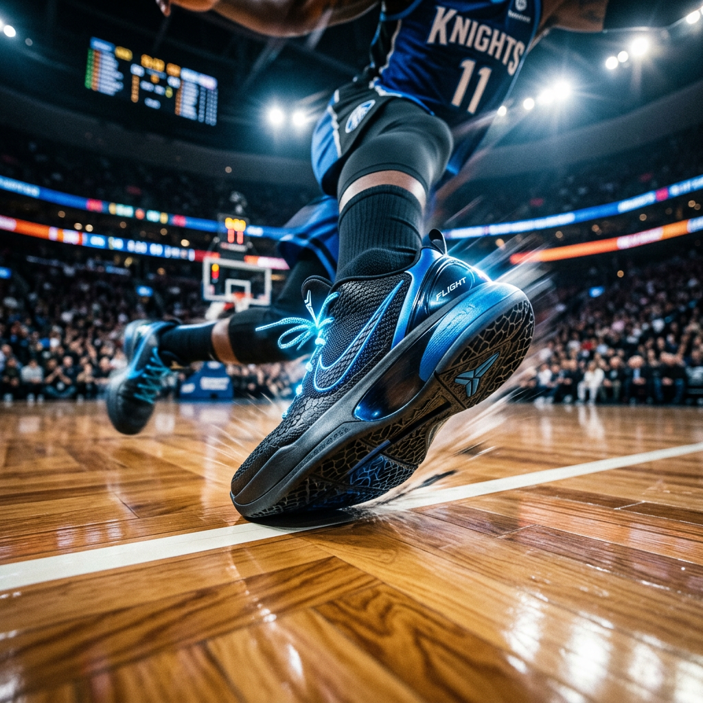

The Ultimate Ja Morant Shoes Guide: Performance, Style, and On-Court Dominance
The Evolution of Explosive Play: Why Ja Morant Shoes Matter
In the modern era of basketball, speed and verticality aren't just advantages—they are requirements. For players who model their game after the relentless energy and gravity-defying leaps of elite guards, the search for the perfect footwear often leads to one name: Ja Morant. But what makes these signature sneakers more than just a marketing hype? It’s the precision engineering designed to handle the sheer force of a high-velocity playing style.
If you have ever felt your foot slide inside your shoe during a hard cut, or felt the jarring impact of a landing after a contest at the rim, you know that standard footwear doesn't cut it. You need a tool that acts as an extension of your anatomy. The Ja Morant signature line was birthed from this exact necessity—providing a low-profile, highly responsive platform for the next generation of athletes.

Engineered for the Ascent: The Technical Mastery of the Signature Line
To understand why these shoes dominate the court, we have to look under the hood. The design philosophy centers on three pillars: responsiveness, lockdown, and weight reduction. For a player who relies on a quick first step, every milligram of weight and every millimeter of sole thickness matters.
Responsive Cushioning for High-Flyers
The core of the Morant footwear experience is the specialized cushioning system. Typically utilizing advanced pressurized air units in the forefoot, these shoes are designed to return energy the moment you load your weight for a jump. This "springboard effect" is crucial for guards who need to transition from a standstill to a full-speed drive in a fraction of a second. Unlike bulkier shoes that prioritize maximum impact protection at the cost of court feel, these sneakers strike a surgical balance—protecting your joints while keeping you connected to the floor.
Lockdown and Stability: The Midfoot System
Explosive lateral movement is a recipe for rolled ankles if the shoe isn't built correctly. The signature line often features a reinforced containment system. This usually involves a combination of internal straps and a secure lacing architecture that pulls the upper tight against the foot. When you lace up, the goal is zero internal movement. This stability allows you to change direction at peak speeds with the confidence that the shoe will move with you, not against you.
Performance Meets Culture: The Aesthetic Appeal
While performance is the priority for high-intent buyers, the cultural impact of Ja Morant shoes cannot be ignored. The silhouette is intentionally sleek, mirroring the lean, athletic build of its namesake. This makes the footwear highly versatile, transitioning seamlessly from a high-stakes game to a casual streetwear environment.
The design language often incorporates personal storytelling—elements reflecting a "work-from-the-ground-up" mentality. This emotional connection resonates with players who view the game as more than just a hobby, but as a path to self-improvement and excellence. Bold colorways and sharp lines ensure that while you’re outperforming your opponent, you’re also commanding attention.
How to Choose the Perfect Pair for Your Game
Not every basketball shoe is created equal, and even within a signature line, different iterations may favor different types of players. To ensure you are getting the most out of your investment, consider these three critical factors:
- Traction Pattern: Look for multidirectional herringbone or generative patterns. If you play on dusty local courts, a more aggressive rubber compound is essential to prevent slipping during crossovers.
- Upper Materials: Synthetic meshes offer the best breathability and a shorter break-in period, whereas reinforced textiles provide more long-term durability for heavy outdoor use.
- Fit and Sizing: Signature guard shoes tend to have a snug, 1-to-1 fit. If you have a wider foot, you may need to consider going up a half-size to avoid discomfort during long sessions.
The Final Verdict: Is the Ja Morant Line Right for You?
The Ja Morant footwear line is specifically curated for the "dynamic" player. If your game is built on transition points, perimeter defense, and attacking the rim, these shoes provide the technical foundation you need to excel. They are built for the athlete who refuses to be grounded—those who see the court as a launchpad rather than just a floor.
By prioritizing court feel and energy return, these sneakers empower you to play with the same fearless aggression that has defined one of the most exciting careers in modern basketball. When performance, stability, and style converge, the result is a piece of equipment that doesn't just support your game—it elevates it.